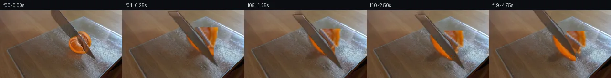

![首帧]()

Round 00
2026-11-05T17:49:56.160204+00:00像素候选变化代码 +363/−0inspection 更新
pixels 218c9376824719f7 · code c264f56924a60840
查看本轮 generate.py 真实 diff
--- previous/generate.py
+++ current/generate.py
@@ -0,0 +1,363 @@
+"""PixelWorld-Vision-Input case_0040.
+
+A tangerine half is quartered on a frosted glass board by a chef's knife.
+Frame 00 is byte-identical to first_frame.png. Frames 01-19 are composited
+from a static inpainted background plate, a blade raster cut from frame 0
+(occluded cross-sections interpolated), two tangerine-quarter sprites cut
+from frame 0, soft contact shadows and a few juice droplets. Only local
+pixel operations are used (numpy, scipy.ndimage, cv2 inpaint/warp, PIL).
+"""
+from pathlib import Path
+import numpy as np
+from PIL import Image
+import scipy.ndimage as ndi
+import cv2
+
+ROOT = Path(__file__).resolve().parent
+TMP = ROOT / ".tmp"
+TMP.mkdir(exist_ok=True)
+rng = np.random.default_rng(4004)
+
+# ---------------------------------------------------------------- geometry
+# blade axis A + s*d ; measured in OBSERVATION.md
+AX = np.array([114.0, 0.0])
+D = np.array([0.636, 0.771])
+N = np.array([-D[1], D[0]]) # unit normal toward lower-left (L quarter)
+
+CUT = [(105, 0), (113, 10), (121, 20), (127, 28), (138, 42), (150, 56),
+ (162, 70), (173, 82), (180, 88), (188, 96), (196, 102), (199, 104)]
+SPINE = [(126, 0), (140, 16), (151, 28), (166, 44), (174, 58),
+ (191, 88), (199, 104)]
+# extension above the frame so a downward stroke reveals real blade
+CUT_EXT = [(95, -12), (99, -6)] + CUT
+SPINE_EXT = [(115, -12), (121, -6)] + SPINE
+
+H, W = 144, 256
+TOP = 14 # canvas rows above frame for off-frame blade material
+CH, CW = H + TOP + 4, W
+
+
+def poly_mask(pts_a, pts_b, shape, off=(0, 0)):
+ poly = np.array(pts_a + pts_b[::-1], dtype=np.int32)
+ poly[:, 0] += off[0]
+ poly[:, 1] += off[1]
+ m = np.zeros(shape, np.uint8)
+ cv2.fillPoly(m, [poly], 1)
+ return m
+
+
+def edge_x(poly, y):
+ """piecewise-linear x of polygon edge at row y"""
+ ys = np.array([p[1] for p in poly])
+ xs = np.array([p[0] for p in poly])
+ order = np.argsort(ys)
+ ys, xs = ys[order], xs[order]
+ return int(round(np.interp(y, ys, xs)))
+
+
+# ------------------------------------------------------------- load frame
+frame0 = np.array(Image.open(ROOT / "first_frame.png").convert("RGB"))
+assert frame0.shape == (H, W, 3)
+
+# ------------------------------------------------- fruit quarter masks
+Rc, Gc, Bc = [frame0[..., i].astype(np.int16) for i in range(3)]
+orange = (Rc > 120) & (Rc - Gc > 35) & (Rc - Bc > 55) & (Gc < 175)
+orange[:43, :] = False
+orange[:, :140] = False
+orange[:, 194:] = False
+orange[94:, :] = False
+orange = ndi.binary_closing(orange, iterations=2)
+orange = ndi.binary_fill_holes(orange)
+
+yy, xx = np.mgrid[0:H, 0:W]
+side = (xx - AX[0]) * N[0] + (yy - AX[1]) * N[1]
+# split lobes by blade side BEFORE labelling, so a closing bridge cannot
+# merge them into one component
+left_seed = orange & (side > 0)
+right_seed = orange & (side < 0)
+for seed in (left_seed, right_seed):
+ lab_s, n_s = ndi.label(seed)
+ keep = np.zeros_like(seed)
+ for i in range(1, n_s + 1):
+ if (lab_s == i).sum() >= 40:
+ keep |= lab_s == i
+ seed &= keep
+
+
+def build_quarter(seed, sign):
… diff truncated; 276 more lines …